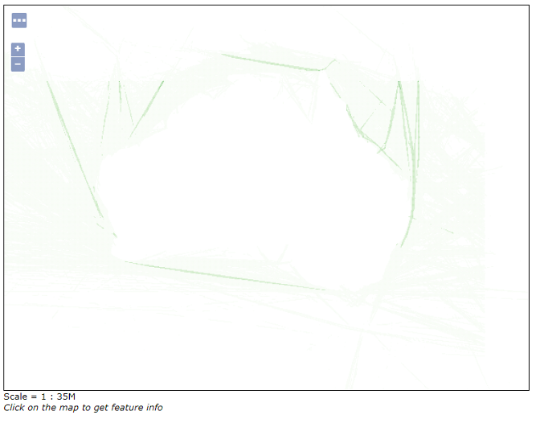

# Load packages
#install.packages('tidyverse', 'sf', 'httr', 'ows4R')
library(tidyverse)
library(sf)
library(httr)
library(ows4R)What you’ll learn in these notes
- What does spatial data on a web map server (WMS) look like?
- How to use R to access these data
- Convert WMS data in a simple features (sf) object
- A broad overview of the capabilities of importing WMS data into R
The problem
I have recently embarked on a mission to collate a spatial database on environmental features and pressures that will eventually feed into a project aiming to develop marine spatial planning frameworks. I love working with data, so the idea of going out and finding as much as I could to work with in R was exciting (I appreciate that there are few people that would share this excitement).
Soon into my mission, I was provided a report that was seemingly a gold mine of different, and relevant datasets. However, I quickly stumbled upon a problem I did not foresee. I was directed to a link leading to an interactive map server, and the data I was after were displayed beautifully online (Fig. 1). I figured it would be a simple case of clicking another link to download the data behind this map, but for the life of me, I could not find this link.

As with most of the issues I come across with data (or just with life in general) I figured that R would have a solution. And it did! Here, I will provide a brief overview of how I managed to get the data from the web map server (WMS) into the wonderfully friendly and versatile ‘sf’ format in R.
Before getting into the code, I want to acknowledge that the solution and code provided here originally accessed from a very helpful blog post by Thierry Onkelinx. I will post the link to the tutorial below, along with a link to their github page, which is full of useful blogs, codes, and functions.
I should also state that the tutorial by Thierry provides more details on the capabilities of this code and the objects it creates, as well as what the functions are doing ‘behind the scenes’. The code provided here will just scratch the surface, and provide a way to read the WMS data into R as an ‘sf’ object.
If you have not come across a data link that leads to a WMS, an example is provided below. This link will display a summary of Australian shipping activity during 1999.
Code
Disclaimer: These notes assume a basic understanding of how to use R and working with spatial data as ‘sf’ objects.
So, you have followed a link (like the example above) and found yourself looking at the data you want on a WMS. Lets head over to R to start the process of extracting the data.
Install and load the following packages:
There is an important part of the link provided that R will use to request the data. This is bold and underlined in our example link below:
https://www.cmar.csiro.au/geoserver/nerp/wms?service=WMS&version=1.1.0&request=GetMap&layers=nerp:ausrep_shipping_1999&styles=&bbox=105.0,-49.0,165.0,-5.0&width=768&height=563&srs=EPSG:4326&format=application/openlayers
Lets copy this section of the link into our R script and save it into our global environment. IMPORTANTLY, we need to change ‘wms’ to ‘wfs’ in the link.
# Save URL
wfs_url <- 'https://www.cmar.csiro.au/geoserver/nerp/wfs?'I will humbly admit that the nuts and bolts of WMS and web features servers (WFS) are beyond my understanding. I like to think of it as WMS refers to the finished map product, and WFS to the meta data behind the map. WFS seems to be more versatile and useful than WMS when it comes to using these in R.
Next, we use the ‘parse’ function to convert the URL into a list, allowing us (and R) to do more useful things with it.
# Make URL R-friendly
url <- parse_url(wfs_url)We now need to generate a connection that will allow R to talk to the server.
# Generate connection to server
url_client <- WFSClient$new(wfs_url, serviceVersion = "2.0.0")This will add ‘url_client’ into the global environment as an R6 object (or ‘environment’). Don’t worry if this seems new or strange, this is another example of something that I do not fully understand. However, it does allow us to get a closer look at the capabilities of bringing WMS data into R. By viewing this object (using ‘View’), we can dive into its many layers and see what is at our fingertips!
#View(url_client)We can also use the following function to explore the operations that provide us with more information on our data.
# Explore operations
url_client$
getCapabilities()$
getOperationsMetadata()$
getOperations() %>%
map_chr(function(x){x$getName()}) [1] "GetCapabilities" "DescribeFeatureType" "GetFeature"
[4] "GetPropertyValue" "ListStoredQueries" "DescribeStoredQueries"
[7] "CreateStoredQuery" "DropStoredQuery" "LockFeature"
[10] "GetFeatureWithLock" "Transaction" Someone with advanced knowledge and experience with R will be able to use these to truly get the most out of the WMS data. However, this is beyond the scope of this blog, and we will just focus on getting the spatial data into an ‘sf’ object.
In saying that, we will get a taste of the capabilities using the following function, which will allow us to look at the data layers that we are able to extract.
# See layer names
url_client$getFeatureTypes() %>%
map_chr(function(x){x$getName()}) [1] "nerp:1996-2000-Data_All_SeismicSurveys__2D_2013_09"
[2] "nerp:2001-2005-Data_All_SeismicSurveys__2D_2013_09"
[3] "nerp:2006-2010-Data_All_SeismicSurveys__2D_2013_09"
[4] "nerp:seismic2d_sum_1961to1965"
[5] "nerp:seismic2d_sum_1966to1970"
[6] "nerp:seismic2d_sum_1971to1975"
[7] "nerp:seismic2d_sum_1976to1980"
[8] "nerp:seismic2d_sum_1981to1985"
[9] "nerp:seismic2d_sum_1986to1990"
[10] "nerp:seismic2d_sum_1991to1995"
[11] "nerp:seismic2d_sum_1996to2000"
[12] "nerp:seismic2d_sum_2001to2005"
[13] "nerp:seismic2d_sum_2006to2010"
[14] "nerp:37005002_Broadnosesevengill-clip"
[15] "nerp:37013003_spottedwobb"
[16] "nerp:37013020_gulfwobbe"
[17] "nerp:37015001_draughtboard-clip"
[18] "nerp:37015009_sawtailcatshark"
[19] "nerp:37015013_whitefin_swellshark"
[20] "nerp:37017003_whiskery-clip"
[21] "nerp:37017008_schoolshark"
[22] "nerp:37018001_bronze-clip"
[23] "nerp:37018003_dusky"
[24] "nerp:37020003_Brier_Shark"
[25] "nerp:37020005_blackbellylantern"
[26] "nerp:37020006_pikedspurdog-clip"
[27] "nerp:37020048_greeneyespurdog"
[28] "nerp:37023002_commonsawshark-clip"
[29] "nerp:37024001_australianangelshark"
[30] "nerp:37024002_ornateangelshark"
[31] "nerp:37027011_southernFidlerRay"
[32] "nerp:37031007_thornbackskate-clip"
[33] "nerp:37031009_peacockskate"
[34] "nerp:37031010_bightskate"
[35] "nerp:37031028_greyskate"
[36] "nerp:37035001_shorttailsting-clip"
[37] "nerp:37035002_blacksting"
[38] "nerp:37039001_southerneagleRay-clip"
[39] "nerp:37042001_ogilbysghostshark"
[40] "nerp:37042003_blackfinGhostshark"
[41] "nerp:37042005_SouthernChimaera"
[42] "nerp:37043001_ElephantFish-clip"
[43] "nerp:seismic3d_sum_1976to1980"
[44] "nerp:seismic3d_sum_1981to1985"
[45] "nerp:seismic3d_sum_1986to1990"
[46] "nerp:seismic3d_sum_1991to1995"
[47] "nerp:seismic3d_sum_1996to2000"
[48] "nerp:seismic3d_sum_2001to2005"
[49] "nerp:seismic3d_sum_2006to2010"
[50] "nerp:ais_shipping_2013"
[51] "nerp:ais_shipping_2014"
[52] "nerp:ais_shipping_2015"
[53] "nerp:AMSA-spills-Chemical-2009-2013"
[54] "nerp:AMSA-spills-Garbage-2009-2013"
[55] "nerp:AMSA-spills-Oil-2009-2013"
[56] "nerp:AMSA-spills-OtherSubstances"
[57] "nerp:AMSA-spills_HarmfulSubstances-2009-2013"
[58] "nerp:ausrep_shipping_1999"
[59] "nerp:ausrep_shipping_2000"
[60] "nerp:ausrep_shipping_2001"
[61] "nerp:ausrep_shipping_2002"
[62] "nerp:ausrep_shipping_2003"
[63] "nerp:ausrep_shipping_2004"
[64] "nerp:ausrep_shipping_2005"
[65] "nerp:ausrep_shipping_2006"
[66] "nerp:ausrep_shipping_2007"
[67] "nerp:ausrep_shipping_2008"
[68] "nerp:ausrep_shipping_2009"
[69] "nerp:ausrep_shipping_2010"
[70] "nerp:ausrep_shipping_2011"
[71] "nerp:csq_al_20112014"
[72] "nerp:al_2013070120180631"
[73] "nerp:bsczsf_2013070120180631"
[74] "nerp:csq_ds_20112014"
[75] "nerp:ds_2013070120180631"
[76] "nerp:csq_bl_20112014"
[77] "nerp:bl_2013070120180631"
[78] "nerp:tw_2013070120180631"
[79] "nerp:dugong_broadscale"
[80] "nerp:dugong_finescale"
[81] "nerp:humpbacks_gbr"
[82] "nerp:Fish-csq_gn_20112014"
[83] "nerp:gn_2013070120180631"
[84] "nerp:greenturtles"
[85] "nerp:csq_hl_20112014"
[86] "nerp:hl_2013070120180631"
[87] "nerp:wahumpbackdistbroadscale"
[88] "nerp:j_2013070120180631"
[89] "nerp:llp_2013070120180631"
[90] "nerp:mid_2013070120180631"
[91] "nerp:oil_spills_sum"
[92] "nerp:oil_lease_areas"
[93] "nerp:cables_active_hydro_proj"
[94] "nerp:cables_deco_hydro_proj"
[95] "nerp:updatedpetroleumpipelines"
[96] "nerp:wells_oil_gas"
[97] "nerp:csq_llp_20112014"
[98] "nerp:csq_pl_20112014"
[99] "nerp:pb_2013070120180631"
[100] "nerp:1991_enumeration_proj"
[101] "nerp:1996_enumeration_proj"
[102] "nerp:2001_enumeration_proj"
[103] "nerp:2006_enumeration_proj"
[104] "nerp:2011_enumeration_proj"
[105] "nerp:Pre-1996-Data_All_SeismicSurveys__2D_2013_09"
[106] "nerp:csq_ps_20112014"
[107] "nerp:ps_2013070120180631"
[108] "nerp:sa_handline_msf_2006_2010"
[109] "nerp:sa_line_msf_2006_2010"
[110] "nerp:sa_line_msf_2011_2015"
[111] "nerp:sa_nets_msf_2006_2010"
[112] "nerp:sa_nets_msf_2011_2015"
[113] "nerp:sa_prawn_2006_2010"
[114] "nerp:sa_prawn_2011_2015"
[115] "nerp:sa_rl_2006_2010"
[116] "nerp:sa_rl_2011_2015"
[117] "nerp:sa_sardine_2006_2010"
[118] "nerp:sa_sardine_2011_2015"
[119] "nerp:sa_traps_msf_2006_2010"
[120] "nerp:sa_traps_msf_2011_2015"
[121] "nerp:sa_abalone_2011_2015"
[122] "nerp:sa_handline_msf_2011_2015"
[123] "nerp:sa_othergear_msf_2006_2010"
[124] "nerp:sa_othergear_msf_2011_2015"
[125] "nerp:sa_abalone_2006_2010"
[126] "nerp:seagrass_aggregations"
[127] "nerp:srw_agregations"
[128] "nerp:srw_aggregations_finescale"
[129] "nerp:srw_range_broadscale"
[130] "nerp:spermwhale_aggregations_finescale"
[131] "nerp:spermwhale_aggregations_totals"
[132] "nerp:spermwhale_core_broadscale"
[133] "nerp:TASEffort_DS"
[134] "nerp:TASEffort_GNMN"
[135] "nerp:TASEffort_HG"
[136] "nerp:TASEffort_DN"
[137] "nerp:TASEffort_HL"
[138] "nerp:TASEffort_JIG"
[139] "nerp:TASEffort_LLDL"
[140] "nerp:TASEffort_Seine"
[141] "nerp:TASEffort_Trolling"
[142] "nerp:csq_tw_20112014"
[143] "nerp:csq_tr_20112014"
[144] "nerp:tr_2013070120180631"
[145] "nerp:tl_2013070120180631"
[146] "nerp:csq_tl_20112014"
[147] "nerp:vesseldensity2013_broadscale"
[148] "nerp:vesseldensity2013_finescale"
[149] "nerp:vesseldensity2014_broadscale"
[150] "nerp:vesseldensity2014_finescale"
[151] "nerp:vesseldensity2015_broadscale"
[152] "nerp:vesseldensity2015_finescale"
[153] "nerp:ez_broadscale"
[154] "nerp:ez_finescale"
[155] "nerp:humpback_westcoast"
[156] "nerp:national_aquaculture"
[157] "nerp:nsw_state_fisheries_20112015_gn_mn"
[158] "nerp:nsw_state_fisheries_20112015_hg"
[159] "nerp:nsw_state_fisheries_20112015_hl"
[160] "nerp:nsw_state_fisheries_20112015_ll_dl"
[161] "nerp:nsw_state_fisheries_20112015_seine_setnet"
[162] "nerp:nsw_state_fisheries_20112015_seine_shots"
[163] "nerp:nsw_state_fisheries_20112015_trap_pot"
[164] "nerp:nsw_state_fisheries_20112015_tw_ds"
[165] "nerp:nt_state_fisheries_aquarium_display_a12"
[166] "nerp:nt_state_fisheries_bait_net_a3"
[167] "nerp:nt_state_fisheries_barramundi_a7"
[168] "nerp:nt_state_fisheries_coastal_line_a1"
[169] "nerp:nt_state_fisheries_coastal_net_a2"
[170] "nerp:nt_state_fisheries_demersal_a6"
[171] "nerp:nt_state_fisheries_finfish_trawl_a16"
[172] "nerp:nt_state_fisheries_jigging_fishery_licence_a17"
[173] "nerp:nt_state_fisheries_mud_crad_a8"
[174] "nerp:nt_state_fisheries_offshore_net_and_line_a5"
[175] "nerp:nt_state_fisheries_restricted_bait_a15"
[176] "nerp:nt_state_fisheries_spanish_mackerel_a4"
[177] "nerp:nt_state_fisheries_timor_reef_a18"
[178] "nerp:nt_state_fisheries_trepang_a13"
[179] "nerp:nt_state_fisheriesmollusc_a9"
[180] "nerp:qldeffort_harvest2011"
[181] "nerp:qldeffort_line2011"
[182] "nerp:qldeffort_net2011"
[183] "nerp:qldeffort_pot2011"
[184] "nerp:qldeffort_trawl2011"
[185] "nerp:recboat_v1"
[186] "nerp:recboat_v2"
[187] "nerp:recboat_v3"
[188] "nerp:recboat_v4"
[189] "nerp:recboat_v5"
[190] "nerp:viceffort2011_bs_hl"
[191] "nerp:viceffort2011_bs_lldl"
[192] "nerp:viceffort2011_bs_mn"
[193] "nerp:viceffort2011_bs_twds"
[194] "nerp:viceffort2011_ppwp_lldl"
[195] "nerp:viceffort2011_ppwp_mn"
[196] "nerp:viceffort2011_ppwp_purseseine"
[197] "nerp:viceffort2011_ppwp_seinenet"
[198] "nerp:viceffort2011_rl_trappot"
[199] "nerp:wa_state_fisheries_20112015_gillnet"
[200] "nerp:wa_state_fisheries_20112015_line"
[201] "nerp:wa_state_fisheries_20112015_ll_dl"
[202] "nerp:wa_state_fisheries_20112015_seine_and_haul_net"
[203] "nerp:wa_state_fisheries_20112015_trap_and_pot"
[204] "nerp:wa_state_fisheries_20112015_trawl_" As you can see, there are actually far more data available than just the shipping summary we were originally looking for! There are over 200 different spatial layers available here, making this a very fruitful endeavour (something we can not always admit to when spending time solving an R problem…).
Now we’ll get to the important part, getting this layer into an oh-so-familiar-and-comforting-and-versatile ‘sf’ object.
# Extract as sf
url$query <- list(service = 'wfs',
# version = '2.0.0', # optional
request = 'GetFeature',
# Change typename to layer name
typename = 'nerp:ausrep_shipping_1999',
srsName = 'EPSG:4326')
layer_url <- build_url(url)Some notes on this code:
‘version’ is an optional argument and allows us to specify the server version we want R to talk to.
‘typename’ refers to the data layer you are wanting to extract. We can change this to any of those listed from the output of the code we ran to get the names of all data layers. Doing so will extract that layer from the server.
‘srsName’ is where we state the coordinate reference system we want our data projected to. If this does not make sense, there are some other great blogs on the Geospatial website to help with this!
‘build_url’ is doing just that; building a URL for our request.
Lets turn this into our ‘sf’ object!
layer_sf <- read_sf(layer_url)And that’s it! We now have our data layer into a format that allows us to tidy, wrangle, and analyse to our hearts content.
We have the all important data now, but that is really only scratching the surface with what we can do with this ‘url_client’ object. Going into more detail is beyond the scope of this blog but I encourage people who want to learn more to go onto the tutorial and Github page of that tutorials author (links are repeated below).
Just to give you a taste of the other operations available, here are some example functions. First, we can access the meta data (if available on the server).
# Get meta data
url_client$
getCapabilities()$
getOperationsMetadata()$
getOperations() %>%
map(function(x){x$getParameters()})[[1]]
[[1]]$AcceptVersions
[1] "1.0.0" "1.1.0" "2.0.0"
[[1]]$AcceptFormats
[1] "text/xml"
[[1]]$Sections
[1] "ServiceIdentification" "ServiceProvider" "OperationsMetadata"
[4] "FeatureTypeList" "Filter_Capabilities"
[[2]]
[[2]]$outputFormat
[1] "application/gml+xml; version=3.2"
[[3]]
[[3]]$resultType
[1] "results" "hits"
[[3]]$outputFormat
[1] "application/gml+xml; version=3.2"
[2] "GML2"
[3] "KML"
[4] "SHAPE-ZIP"
[5] "application/json"
[6] "application/vnd.google-earth.kml xml"
[7] "application/vnd.google-earth.kml+xml"
[8] "csv"
[9] "gml3"
[10] "gml32"
[11] "json"
[12] "text/csv"
[13] "text/xml; subtype=gml/2.1.2"
[14] "text/xml; subtype=gml/3.1.1"
[15] "text/xml; subtype=gml/3.2"
[[3]]$resolve
[1] "none" "local"
[[4]]
[[4]]$resolve
[1] "none" "local"
[[4]]$outputFormat
[1] "application/gml+xml; version=3.2"
[[5]]
named list()
[[6]]
named list()
[[7]]
[[7]]$language
[1] "urn:ogc:def:queryLanguage:OGC-WFS::WFSQueryExpression"
[[8]]
named list()
[[9]]
[[9]]$releaseAction
[1] "ALL" "SOME"
[[10]]
[[10]]$resultType
[1] "results" "hits"
[[10]]$outputFormat
[1] "application/gml+xml; version=3.2"
[2] "GML2"
[3] "KML"
[4] "SHAPE-ZIP"
[5] "application/json"
[6] "application/vnd.google-earth.kml xml"
[7] "application/vnd.google-earth.kml+xml"
[8] "csv"
[9] "gml3"
[10] "gml32"
[11] "json"
[12] "text/csv"
[13] "text/xml; subtype=gml/2.1.2"
[14] "text/xml; subtype=gml/3.1.1"
[15] "text/xml; subtype=gml/3.2"
[[10]]$resolve
[1] "none" "local"
[[11]]
[[11]]$inputFormat
[1] "application/gml+xml; version=3.2"
[[11]]$releaseAction
[1] "ALL" "SOME"We can also use the ‘pluck’ function from the ‘purrr’ package to extract an element hidden deep within a nested object. Here, we are extracting the available output formats for the data layers.
# See output formats
url_client$
getCapabilities()$
getOperationsMetadata()$
getOperations() %>%
map(function(x){x$getParameters()}) %>%
# '3' is an index into the object
pluck(3, 'outputFormat') [1] "application/gml+xml; version=3.2"
[2] "GML2"
[3] "KML"
[4] "SHAPE-ZIP"
[5] "application/json"
[6] "application/vnd.google-earth.kml xml"
[7] "application/vnd.google-earth.kml+xml"
[8] "csv"
[9] "gml3"
[10] "gml32"
[11] "json"
[12] "text/csv"
[13] "text/xml; subtype=gml/2.1.2"
[14] "text/xml; subtype=gml/3.1.1"
[15] "text/xml; subtype=gml/3.2" As you can see, you can export the data in a different format if you are wanting it as something other than an ‘sf’ object or shapefile. We can also turn it into an Excel friendly .csv file.
So that brings us to the end of our brief look into WMS and WFS data and how we can access the data (and much more) using R. Hopefully, you have learned something useful.
Happy data hunting!